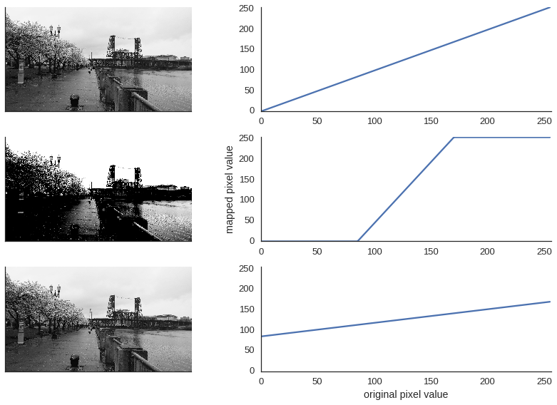
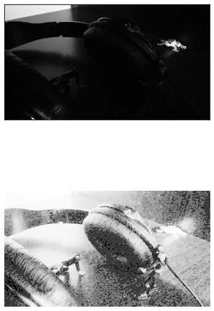

Data Transformation Super Powers with Digital Signal Processing
Amy Boyle @amylouboyle
Digital Signal Processing = DSP
- Who am I?
- What is DSP?
- Sound
- Images
- Compression
Who Am I?
- Software Engineer
- Auditory Neuroscience Research
What is DSP?
Digital signal processing (DSP) is the mathematical manipulation of an information signal to modify or improve it in some way. It is characterized by the representation of discrete time, discrete frequency, or other discrete domain signals by a sequence of numbers or symbols and the processing of these signals.

Doing Stuff to Points
(of data)What is a Signal?
A type of physical data that conveys information.
A description of how one parameter depends on another
Sound
Light

Temperature

heart beats

hiking trail elevation

A digital signal is a signal turned into values at points in time or space
Sampling gets values at regular intervals

Quantization buckets values

All signals are just sin/cos waves
 =
=
t = np.arange(0.0, 1.0, 0.01)
signal = np.zeros_like(t)
for i in range(2, 100, 2):
signal = np.sin(i*2*t*np.pi)/i
Sound Example
Fourier Transform converts time series data into frequency information
import numpy as np
import matplotlib.pyplot as plt
fs = 44100
step_size = 1./44100
t = np.arange(0.0, 1.0, step_size)
twotone = np.sin(t*750*2*np.pi) + \
np.sin(t*1500*2*np.pi)
spectrum = np.fft.rfft(twotone)
freqs = np.fft.rfftfreq(len(twotone), 1./fs)
plt.plot(freqs, abs(spectrum))
Running the FFT on time chunks gives a spectrogram
import numpy as np
import matplotlib.pyplot as plt
fs = 44100
step_size = 1./44100
t = np.arange(0.0, 1.0, step_size)
twotone = np.sin(t*750*2*np.pi) + \
np.sin(t*1500*2*np.pi)
plt.specgram(twotone, Fs=fs, NFFT=512,
noverlap=0, cmap='gnuplot');
Speech is more complex

from scipy.io import wavfile
from scipy import signal
fs, audio = wavfile.read('audio/distorted.wav')
passband = 10000. #Hz
stopband= 11000.
nyq = 0.5 * fs
order, normalized_cutoff = signal.buttord(passband/nyq, stopband/nyq, 3, 40)
b, a = signal.butter(order, normalized_cutoff, btype='low')
low_passed = np.zeros_like(audio)
low_passed[:,0] = signal.lfilter(b, a, audio[:,0])
low_passed[:,1] = signal.lfilter(b, a, audio[:,1])
wavfile.write('filtered.wav', fs, low_passed)
Filtered

Inadequate sampling rate can cause aliasing
fs = 500
step_size = 1./fs
t = np.arange(0.0, 1.0, step_size)
freq0 = 120
freq1 = 110
twotone = np.sin(t*freq0*2*np.pi) + \
np.sin(t*freq1*2*np.pi)
spectrum = np.fft.rfft(twotone)
freqs = np.fft.rfftfreq(len(twotone), 1./fs)
ax, fig = plot(freqs, abs(spectrum), '
Frequency (Hz)', 'Amplitude')
Inadequate sampling rate can cause aliasing
fs = 50
step_size = 1./fs
t = np.arange(0.0, 1.0, step_size)
freq0 = 120
freq1 = 110
twotone = np.sin(t*freq0*2*np.pi) + \
np.sin(t*freq1*2*np.pi)
spectrum = np.fft.rfft(twotone)
freqs = np.fft.rfftfreq(len(twotone), 1./fs)
ax, fig = plot(freqs, abs(spectrum), '
Frequency (Hz)', 'Amplitude')


An Image is a 2D signal in the spatial domain
| 46 | 34 | 77 | 96 | 97 |
|---|---|---|---|---|
| 0 | 0 | 44 | 92 | 112 |
| 0 | 0 | 52 | 77 | 92 |
| 0 | 0 | 60 | 71 | 75 |
| 24 | 43 | 61 | 66 | 63 |
Brightness shifts pixel values up or down
image = plt.imread('img/foggy_headshot.jpg')
imshape = image.shape
flat_image = image.flatten()
# increase brightness
brighter = np.arange(256)
brighter += 100
brighter[brighter>255] = 255
bright_adjusted = brighter[flat_image]
bright_adjusted = bright_adjusted.reshape(*imshape)
# decrease brightness
darker = np.arange(256)
darker -= 100
darker[darker<0] = 0
bright_adjusted = darker[flat_image]
bright_adjusted = bright_adjusted.reshape(*imshape)
Contrast stretches pixel values

def adjust_contrast(image, factor, brightness):
contrast_map = np.arange(256)
contrast_map = (contrast_map * factor) - (brightness * (factor - 1))
contrast_map[contrast_map > 255] = 255
contrast_map[contrast_map < 0] = 0
return contrast_map[image], contrast_map
adjusted_image, contrast_map = adjust_contrast(flat_image, factor=3, brightness=128)
adjusted_image, contrast_map = adjust_contrast(flat_image, factor=1./3, brightness=128)
Histogram Equalization

bin_counts, bin_numbers = np.histogram(flat_image, bins=256, range=(0,256))
Histogram Equalization

bin_counts, bin_numbers = np.histogram(flat_image, bins=256, range=(0,256))
npx = len(flat_image)
histo_map = (np.cumsum(bin_counts)/float(npx))*256

import numpy as np
import matplotlib.pyplot as plt
image = plt.imread('img/yosam_bw.jpg')
imshape = yosam_bw.shape
flat_image = yosam_bw.flatten()
bin_counts, bin_numbers = np.histogram(flat_image, bins=256,
range=(0,256))
npx = len(flat_image)
histo_map = (np.cumsum(bin_counts)/float(npx))*256
contrast_adjusted = histo_map[flat_image]
contrast_adjusted = contrast_adjusted.reshape(*imshape)
plt.imshow(contrast_adjusted, cmap=plt.cm.Greys_r)
COLOR!
from PIL import Image, ImageOps
import matplotlib.pyplot as plt
fig = plt.figure(figsize=(6,12))
image = Image.open("img/foggy_headshot.jpg")
plt.subplot(2,1,1)
plt.imshow(image)
equalized = ImageOps.equalize(image)
plt.subplot(2,1,2)
plt.imshow(equalized)

Compression with JPEG
Joint Photographic Experts GroupJPEG Compression Steps
- Convert RGB to YCbCr
- Downsample
- DCT
- Quantize
- Encode
Convert RBG to YCbCr
from PIL import Image
pimage = Image.open(image_file)
ycbcr = pimage.convert('YCbCr')
image_array = np.array(ycbcr)
Downsample
Assign say 4 chroma pixels for each luminanceDivide image into 8x8 chunks

for row in range(0, ylen, 8):
for col in range(0, xlen, 8):
chunk = image_array[row:row+8, col:col+8, 0]
...
Discrete Cosine Transform (DCT)

from scipy.fftpack import dct
dct_coefficents = dct(dct(shifted_grid, axis=0), axis=1)
print dct_coefficents.astype(int)
Quantization

Apply Huffman/run-length encoding


- Signals are composed of sine waves
- Adequate sampling rate is important
- Understand the underlying process
Presentation on amyboyle.ninja
Source at github.com/boylea/dsp-talk
@amylouboyle